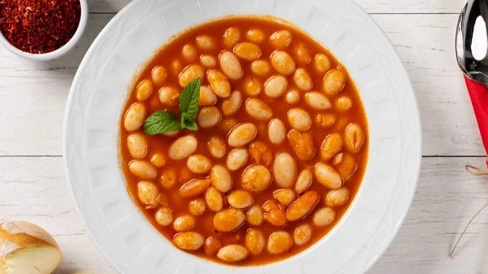

Haricot Bean Recipe - Kuru Fasulye Tarifi

Geleneksel sofralarımızın, mutfağımızın sahip olduğu tüm yemek tariflerinin baş tacıdır aslında kuru fasulye.
Tarifte yer alan kuru fasulyeler, cinsi ve önerilen pişirme süresine göre bir gece önceden ılık suya basılır.
Sıvı yağda kavrulmuş kuru soğan, salça ve toz kırmızı bibere eklenen haşlanmış kuru fasulyeler, kabuk atmaması
için kısık ateşte pişirilir. Ona en çok yakışan bulgur pilavı ya da tereyağlı pirinç pilavı eşliğinde soğuk ya
da sıcak olarak servis edilir.
Yaz sofralarında kuru nane eşlik eder ona yanına buz gibi bir kase cacık. Sizin anlayacağınız mevsimsizdir kuru
fasulye ve damaklarda kalan tadına doyum olmaz.
Kuru fasulye tarifini hazırladık hazırlamasına da yanında ne olsun istersiniz? Önerdiğimiz gibi pilav ve cacık
mı yoksa sadece iyi yapılmış bir mısır ekmeği mi? Haydi buyurun etsiz kuru fasulye tarifine!
Ingredients - Malzemeler
- 4
yemek kaşığı
sıvı yağ
- 2
yemek kaşığı
tereyağı
- 1
adet
orta boy kuru soğan
(yemeklik doğranmış)
- 1
yemek kaşığı
domates salçası
- 500
gram
kuru fasulye
(1 gece önceden suda bekletilmilş)
- 3
su bardağı
su
- 1
çay kaşığı
tuz
- 1
çay kaşığı
toz şeker
- 1/2
çay kaşığı
tatlı toz kırmızı biber
Steps - Yapılış
- Kuru fasulye yemeği için 4 yemek kaşığı sıvı yağ ve 2 yemek kaşığı tereyağını derin bir tencereye aktarın ve
kızdırın.1 adet yemeklik doğranmış kuru soğanı da ekleyin ve pembeleşinceye kadar kavurun. Soğanların iyice
kavrulması ve tereyağının doğal olması lezzeti arttıracaktır.
- Soğanlar kavrulduktan sonra 1 yemek kaşığı domates salçasını ekleyin ve kokusu çıkana kadar kavurun.
- Son olarak bir gece önceden suda beklettiğiniz kuru fasulyeleri de tencereye ekleyin.
- Sonra 1-2 dakika karıştırın ve 3 su bardağı su, 1 çay kaşığı kırmızı toz biber, 1 çay kaşığı tuz ve 1 çay
kaşığı toz şekeri ekleyin, kapağını kapatıp fasulyeler yumuşayana kadar pişirin. Fasulyelerinizin cinsine
göre su miktarını arttırabilirsiniz. Dilerseniz tavuk ya da et suyu da kullanabilirsiniz.
- Kuru fasulye hazır. Tane tane pişmiş pirinç pilavı, cacık ve salata ile kuru fasulye yemeğini servis
edebilirsiniz. Afiyet olsun!